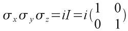
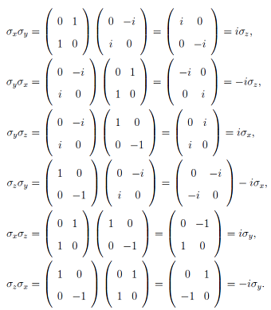

Since all Pauli matrices are both unitary and Hermitian, applying the operator twice on a qubit (MM|ψ>) will give back the original qubit, i.e., M2 = I where M is either σx, σy, or σz. Another interesting property about the Pauli matrices involves their product. Taking the product of σx, σy, and σz, we get I (the identity operator) as seen below.
Below are the products of the different Pauli matricies:
The product of any two Pauli matrices is the third Pauli matrix multiplied by the phase factor of i and -i. This does not change the probability distribution associated to the α and β values.